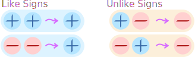
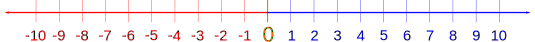
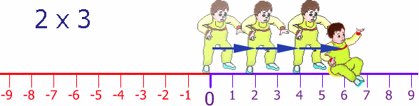
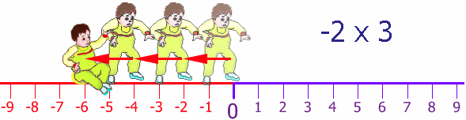
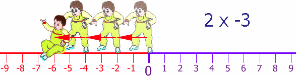
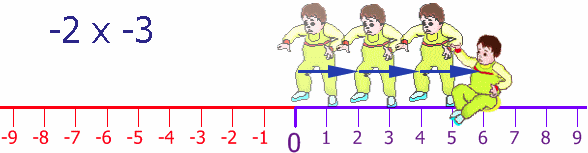

Multiplying Negatives
When We Multiply:
| Example | |||
| × | two positives make a positive: | 3 × 2 = 6 | |
| × | two negatives make a positive: | (−3) × (−2) = 6 | |
| × | a negative and a positive make a negative: |
(−3) × 2 = −6 | |
| × | a positive and a negative make a negative: |
3 × (−2) = −6 |
Yes indeed, two negatives make a positive, and we will explain why, with examples!
Signs
Let's talk about signs.
"+" is the positive sign, "−" is the negative sign.
When a number has no sign it usually means that it is positive.
Example: 5 is really +5
And we can put () around the numbers to avoid confusion.
Example: 3 × −2 can be written as (+3) × (−2)
Two Signs: The Rules

"Two like signs make a positive sign,
two unlike signs make a negative sign"
Example: (−2) × (+5)
The signs are − and + (a negative sign and a positive sign), so they are unlike signs (they are different to each other)
So the result must be negative:
(−2) × (+5) = −10
Example: (−4) × (−3)
The signs are − and − (they are both negative signs), so they are like signs (like each other)
So the result must be positive:
(−4) × (−3) = +12
Why does multiplying two negative numbers make a positive?
Well, first there is the "common sense" explanation:
When I say "Eat!" I am encouraging you to eat (positive)
But when I say "Do not eat!" I am saying the opposite (negative).
Now if I say "Do NOT not eat!", I am saying I don't want you to starve, so I am back to saying "Eat!" (positive).
So, two negatives make a positive, and if that satisfies you, then you don't need to read any more.
Direction
It is all about direction. Remember the Number Line?

Well here we have Baby Steven taking his first steps. He takes 2 paces at a time, and does this three times, so he moves 2 steps x 3 = 6 steps forward:

Now, Baby Steven can also step backwards (he is a clever little guy). His Dad puts him back at the start and then Steven steps backwards 2 steps, and does this three times:

Once again Steven's Dad puts him back at the start, but facing the other way. Steven takes 2 steps forward (for him!) but he is heading in the negative direction. He does this 3 times:

Back at the start again (thanks Dad!), still facing in the negative direction, he tries his backwards walking, once again taking two steps at a time, and he does this three times:

So, by walking backwards, while facing in the negative direction, he moves in the positive direction.
Try it yourself! Try walking forwards and backwards, then again but facing the other direction.
Play With It
But maybe you would like to see it in action? Use the sliders below:
More Examples
Example: Money
| Sam gives you three $10 notes: | +3 × +10 = you gain $30 | |
| Sam gives you three $10 debts: | +3 × −10 = you lose $30 | |
| Sam takes three $10 notes from you: | −3 × +10 = you lose $30 | |
| Sam takes three $10 debts from you: | −3 × −10 = you gain $30 |
Example: A Video of People Running
People Run Forward, Video Normal:
All normal, people running forwards: +1 × +1 = +1
People Run Forward, but Video in Reverse:
Looks like people running backwards: +1 × −1 = −1
People Run Backward, Video Normal:
You see people running backwards: −1 × +1 = −1
People Run Backward, but Video in Reverse:
Looks like people running forwards: −1 × −1 = +1
Example: Tank Levels Rising/Falling
The tank has 30,000 liters, and 1,000 liters are taken out every day. What was the amount of water in the tank 3 days ago?
We know the amount of water in the tank changes by −1,000 every day, and we need to subtract that 3 times (to go back 3 days), so the change is:
−3 × −1,000 = +3,000
The full calculation is:
30,000 + (−3 × −1,000) = 30,000 + 3,000 = 33,000
So 3 days ago there were 33,000 liters of water in the tank.
Multiplication Table
Here is another way of looking at it.
First have a play with this (explanations below):
Start with the multiplication table (just up to 4×4 will do):
| × | 1 | 2 | 3 | 4 |
|---|---|---|---|---|
| 1 | 1 | 2 | 3 | 4 |
| 2 | 2 | 4 | 6 | 8 |
| 3 | 3 | 6 | 9 | 12 |
| 4 | 4 | 8 | 12 | 16 |
Now see what happens when we head into negatives!
Let's go backwards through zero:
| × | 1 | 2 | 3 | 4 |
|---|---|---|---|---|
| -4 | -4 | -8 | -12 | -16 |
| -3 | -3 | -6 | -9 | -12 |
| -2 | -2 | -4 | -6 | -8 |
| -1 | -1 | -2 | -3 | -4 |
| 0 | 0 | 0 | 0 | 0 |
| 1 | 1 | 2 | 3 | 4 |
| 2 | 2 | 4 | 6 | 8 |
| 3 | 3 | 6 | 9 | 12 |
| 4 | 4 | 8 | 12 | 16 |
Look at the "4" column: it goes -16, -12, -8, -4, 0, 4, 8, 12, 16. Getting 4 larger each time.
Look over that table again, make sure you are comfortable with how it works, because ...
... now we go further to the left, through zero:
| × | -4 | -3 | -2 | -1 | 0 | 1 | 2 | 3 | 4 |
|---|---|---|---|---|---|---|---|---|---|
| -4 | 16 | 12 | 8 | 4 | 0 | -4 | -8 | -12 | -16 |
| -3 | 12 | 9 | 6 | 3 | 0 | -3 | -6 | -9 | -12 |
| -2 | 8 | 6 | 4 | 2 | 0 | -2 | -4 | -6 | -8 |
| -1 | 4 | 3 | 2 | 1 | 0 | -1 | -2 | -3 | -4 |
| 0 | 0 | 0 | 0 | 0 | 0 | 0 | 0 | 0 | 0 |
| 1 | -4 | -3 | -2 | -1 | 0 | 1 | 2 | 3 | 4 |
| 2 | -8 | -6 | -4 | -2 | 0 | 2 | 4 | 6 | 8 |
| 3 | -12 | -9 | -6 | -3 | 0 | 3 | 6 | 9 | 12 |
| 4 | -16 | -12 | -8 | -4 | 0 | 4 | 8 | 12 | 16 |
We can follow along a row (or column) and the values change consistently:
- Follow the "4" row: it goes -16, -12, -8, -4, 0, 4, 8, 12, 16. Getting 4 larger each time.
- Follow the "-4" row: it goes 16, 12, 8, 4, 0, -4, -8, -12, -16. Getting 4 smaller each time.
- etc...
So it all follows a consistent pattern!
Also see this at Real Multiplication Table.
What About Multiplying 3 or More Numbers Together?
Multiply two at a time and follow the rules.
Example: What is (−2) × (−3) × (−4) ?
First multiply (−2) × (−3). Two like signs make a positive sign, so:
(−2) × (−3) = +6
Next multiply +6 × (−4). Two unlike signs make a negative sign, so:
+6 × (−4) = −24
Result: (−2) × (−3) × (−4) = −24